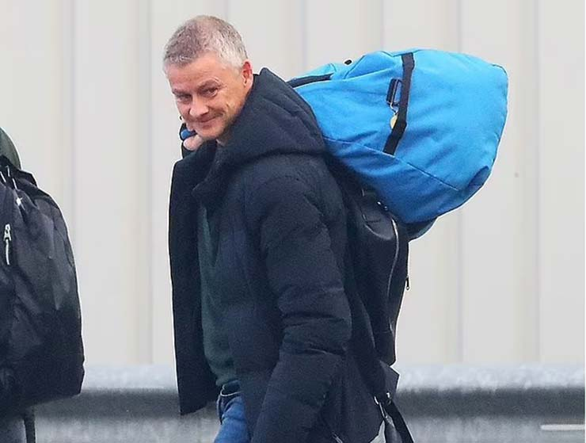
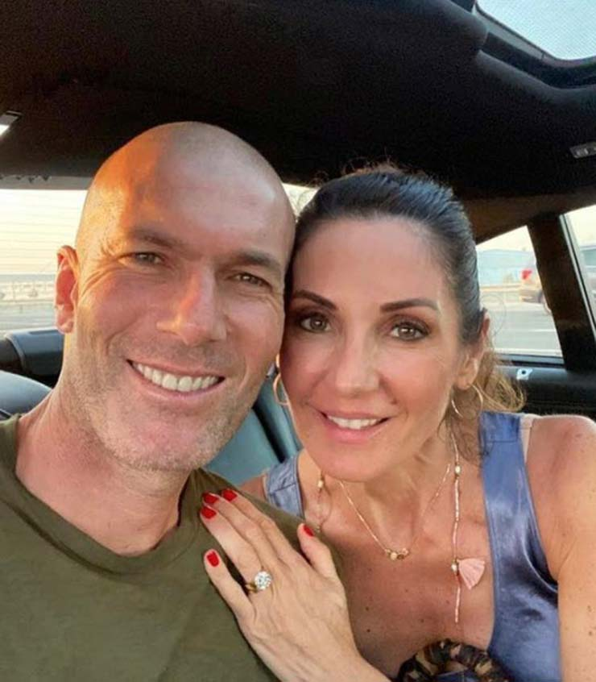

Zidane sẵn sàng thay Solskjaer ở M.U nhưng có một trở ngại
Zidane bùi tai với lời mời của MU, bất ngờ gặp trở ngại từ vợ khó tính
Bất chấp việc ban lãnh đạo MU vẫn đang kiên nhẫn với Ole Gunnar Solskjaer sau thành tích thi đấu rất tệ thời gian vừa qua, họ bắt đầu có sự suy nghĩ lại khi cân nhắc kỹ tình hình tại CLB. Solskjaer không chỉ đang thể hiện sự yếu kém về năng lực, mà trong nội bộ MU có khá nhiều cầu thủ bất phục vì sự thiếu nhất quán trong chỉ đạo của HLV người Na Uy, lẫn những lời hứa cuội của ông này sau khi cam kết cho một số cầu thủ cơ hội ra sân.
Do đó mà nhiều thành viên ban giám đốc MU đã bắt đầu thúc đẩy cho khả năng chia tay giữa hai bên được xảy ra. Do Antonio Conte đã sang Tottenham nên giờ HLV tiếng tăm nhất mà MU có thể đón về là Zinedine Zidane, người vốn không được xem là dễ tiếp cận do ông có vẻ muốn dẫn dắt ĐT Pháp sau World Cup 2022 hơn.
Tuy nhiên nhà báo Duncan Castles mới đây cho biết Zidane vẫn sẽ lắng nghe đề nghị của MU nếu được mời bởi ông sẽ được hội ngộ với một số cầu thủ mà ông muốn làm việc cùng. Ở CLB có Cristiano Ronaldo và Raphael Varane là 2 cầu thủ cũ của ông khi còn dẫn dắt Real Madrid, trong khi Paul Pogba là đồng hương cũng như một cầu thủ ông đã từng rất muốn sở hữu khi còn dẫn dắt đội bóng Hoàng gia TBN.
Dù vậy Zidane vẫn có khá nhiều hoài nghi về MU, đáng kể nhất là việc ông có quyền hoạch định chuyển nhượng hay không do từ lâu Ed Woodward đã phụ trách mảng này và sắp tới Woodward đi thì sẽ có Richard Arnold lên thay thế. Zidane trong nhiệm kỳ 2 dẫn dắt Real Madrid đã đòi chủ tịch Florentino Perez phải trao cho mình quyền tự quyết chuyển nhượng rồi mới nhận lời dẫn dắt.
Chưa kể theo Castles, Zidane có thể sẽ từ chối MU vì lý do gia đình. Vợ ông, bà Veronique, không thích thú lắm với việc chuyển sang Manchester. Một cựu sinh viên chuyên ngành sinh học và vũ công, bà Veronique dù là người Pháp nhưng đã dành phần lớn tuổi thơ lớn lên tại Tây Ban Nha nên không khó khăn định cư cùng chồng tại Madrid từ năm 2001 đến nay.
Hơn nữa bà Veronique cũng muốn chồng mình dành một thời gian nghỉ dài, tránh xa bóng đá để có thời gian bên gia đình. Sau khi chia tay Real, Zidane cùng vợ và các con đã đi nghỉ hè ở miền nam nước Pháp, ngoài ra ông cũng dành thời gian thực hiện các hoạt động quảng bá cho hãng Adidas cũng như cho học viện bóng đá Zidane Five Club của mình, những việc không mấy căng thẳng và cho phép ông được xả hơi.
Được dẫn dắt ĐT Pháp vẫn là giấc mơ lớn của Zidane nên lời mời của MU dù hấp dẫn tới đâu cũng rất khó để thuyết phục được Zizou. Cộng thêm yếu tố gia đình, và thách thức cho “Quỷ Đỏ” là khổng lồ.
 KTX ĐH Giao thông vận tải phân hiệu TP.HCM
KTX ĐH Giao thông vận tải phân hiệu TP.HCM 099999999
099999999